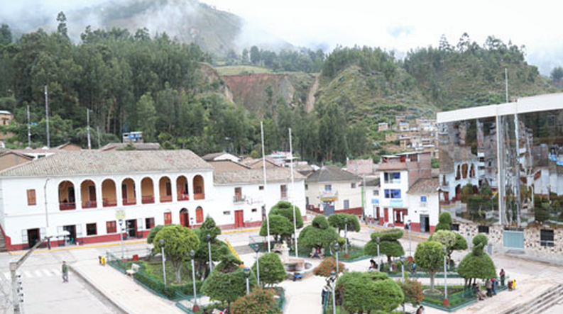
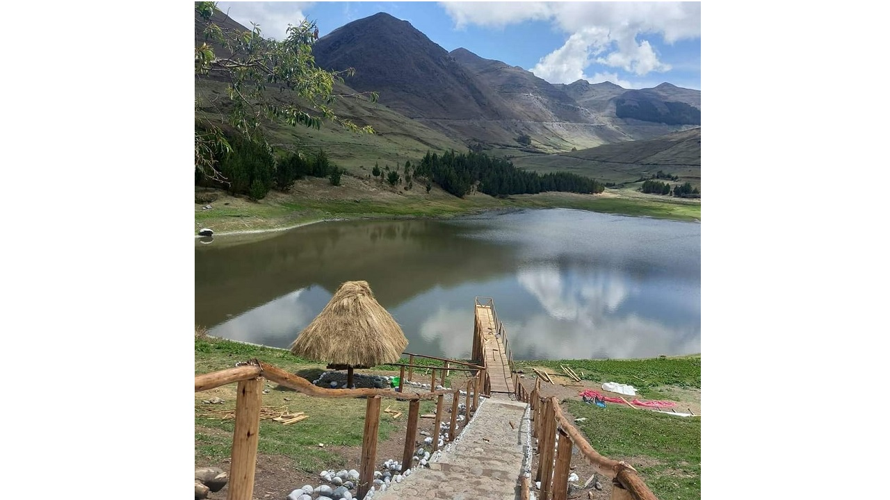

Cada cosa tiene belleza, pero no todos pueden verla. La Mar es un claro ejemplo, siendo un lugar bello y lleno de costumbres. Fue creada en el mandato presidencial del mariscal Ramón Castilla. Con su capital en San Miguel, siendo un lugar lleno de magia, inspiración, con personas hermosas y trabajadoras.
Una de las atracciones más interesantes es la catarata Saywapata, que se encuentra en San Miguel, mirelo por ud. mismo.

También tenemos la laguna Punqui, a continuación una imagen mostrando su hermosa belleza.
 Volver